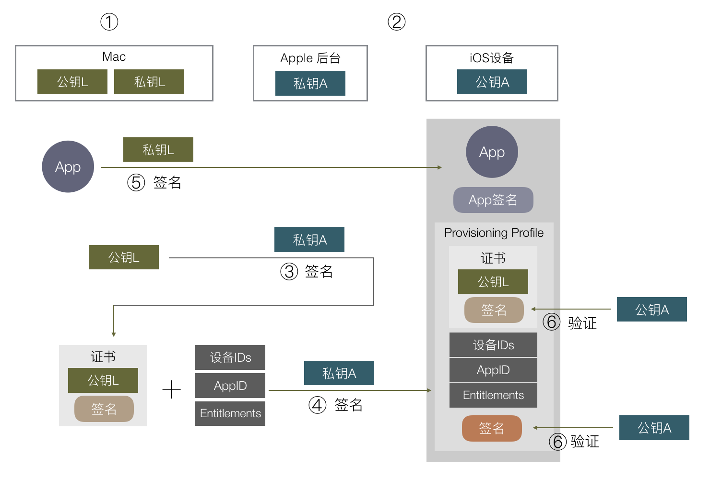
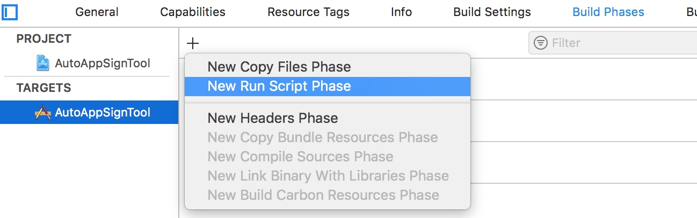

目的：
保证 iOS 平台对第三方 APP 有绝对的控制权，每一个安装到 iOS 上的 APP 都是经过苹果官方允许的。
签名过程

- 在你的 Mac 开发机器生成一对公私钥，这里称为公钥L，私钥L。L:Local
- 苹果自己有固定的一对公私钥，跟上面 AppStore 例子一样，私钥在苹果后台，公钥在每个 iOS 设备上。这里称为公钥A，私钥A。A:Apple
- 把公钥 L 传到苹果后台，用苹果后台里的私钥 A 去签名公钥 L。得到一份数据包含了公钥 L 以及其签名，把这份数据称为证书。
- 在苹果后台申请 AppID，配置好设备 ID 列表和 APP 可使用的权限，再加上第③步的证书，组成的数据用私钥 A 签名，把数据和签名一起组成一个 Provisioning Profile 文件，下载到本地 Mac 开发机。
- 在开发时，编译完一个 APP 后，用本地的私钥 L 对这个 APP 进行签名，同时把第④步得到的 Provisioning Profile 文件打包进 APP 里，文件名为 embedded.mobileprovision，把 APP 安装到手机上。
- 在安装时，iOS 系统取得证书，通过系统内置的公钥 A，去验证 embedded.mobileprovision 的数字签名是否正确，里面的证书签名也会再验一遍。
- 确保了 embedded.mobileprovision 里的数据都是苹果授权以后，就可以取出里面的数据，做各种验证，包括用公钥 L 验证APP签名，验证设备 ID 是否在 ID 列表上，AppID 是否对应得上，权限开关是否跟 APP 里的 Entitlements 对应等。
概念和操作
上面的步骤对应到我们平常具体的操作和概念是这样的：
- 第 1 步对应的是 keychain 里的 “从证书颁发机构请求证书”，这里就本地生成了一对公私钥，保存的 CertificateSigningRequest 就是公钥，私钥保存在本地电脑里。
- 第 2 步苹果处理，不用管。
- 第 3 步对应把 CertificateSigningRequest 传到苹果后台生成证书，并下载到本地。这时本地有两个证书，一个是第 1 步生成的，一个是这里下载回来的，keychain 会把这两个证书关联起来，因为他们公私钥是对应的，在XCode选择下载回来的证书时，实际上会找到 keychain 里对应的私钥去签名。这里私钥只有生成它的这台 Mac 有，如果别的 Mac 也要编译签名这个 App 怎么办？答案是把私钥导出给其他 Mac 用，在 keychain 里导出私钥，就会存成 .p12 文件，其他 Mac 打开后就导入了这个私钥。
- 第 4 步都是在苹果网站上操作，配置 AppID / 权限 / 设备等，最后下载 Provisioning Profile 文件。
- 第 5 步 XCode 会通过第 3 步下载回来的证书（存着公钥），在本地找到对应的私钥（第一步生成的），用本地私钥去签名 App，并把 Provisioning Profile 文件命名为 embedded.mobileprovision 一起打包进去。这里对 App 的签名数据保存分两部分，Mach-O 可执行文件会把签名直接写入这个文件里，其他资源文件则会保存在 _CodeSignature 目录下。
- 第 6 – 7 步的打包和验证都是 Xcode 和 iOS 系统自动做的事。
这里再总结一下这些概念：
- 证书：内容是公钥或私钥，由其他机构对其签名组成的数据包。
- Entitlements：包含了 App 权限开关列表。
- CertificateSigningRequest：本地公钥。
- p12：本地私钥，可以导入到其他电脑。
- Provisioning Profile：包含了 证书 / Entitlements 等数据，并由苹果后台私钥签名的数据包。
iOS APP 重签名具体操作(手动)
- 干掉插件Plugins文件夹里面的内容!
- Watch 文件删除
对 Frameworks 进行签名!
`$ codesign -fs "证书" xxx.framework`给可执行文件执行权限!
chmod +x WeChat拷贝描述文件(可新建工程，获取app包中
embedded.mobileprovision)修改info.plist 的Bundle ID(与描述文件工程一致)
生成plist的权限文件
en.plist(复制embedded.mobileprovision权限内容)，放到Payload目录下<key>keychain-access-groups</key> <array>
<string>X7Y****CQ.*</string>
</array>
<key>get-task-allow</key>
<true/>
<key>application-identifier</key>
<string>X7Y****JCQ.*</string>
<key>com.apple.developer.team-identifier</key>
<string>X7Y****CQ</string>签名整个APP!
$ codesign -fs "iPhone Developer: xxxxxx (6ZBE4C573L)" --no-strict --entitlements=en.plist WeChat.app打包其实就是一个zip
$ zip -ry WeChat.ipa PayloadiPhone Developer: shan jingjing (3QDN5929LL)
安装到手机
Xcode->Window->Devices and Simulators->Devices INSTALL APP 点击+选中WeChat.ipa
iOS APP 利用Xcode重签名
- 创建工程，替换Product下的app
- 修改
Bundle identifier与新建工程一致 - Plugins、Watch 文件删除
Framework重签名
`$ codesign -fs "证书" xxx.framework`给可执行文件执行权限!
chmod +x WeChatXcode 运行安装至手机
iOS APP 脚本自动化重签名
新建工程，添加
Run Script脚本
# ${SRCROOT} 它是工程文件所在的目录
TEMP_PATH="${SRCROOT}/Temp"
#资源文件夹
ASSETS_PATH="${SRCROOT}/TargetAPP"
#ipa包路径
TARGET_IPA_PATH="${ASSETS_PATH}/*.ipa"
#新建Temp文件夹
rm -rf "${SRCROOT}/Temp"
mkdir -p "${SRCROOT}/Temp"
#----------------------------------------
# 1. 解压IPA到Temp下
unzip -oqq "$TARGET_IPA_PATH" -d "$TEMP_PATH"
# 拿到解压的临时的APP的路径
TEMP_APP_PATH=$(set -- "$TEMP_PATH/Payload/"*.app;echo "$1")
# echo "路径是:$TEMP_APP_PATH"
#----------------------------------------
# 2. 将解压出来的.app拷贝进入工程下
# BUILT_PRODUCTS_DIR 工程生成的APP包的路径
# TARGET_NAME target名称
TARGET_APP_PATH="$BUILT_PRODUCTS_DIR/$TARGET_NAME.app"
echo "app路径:$TARGET_APP_PATH"
rm -rf "$TARGET_APP_PATH"
mkdir -p "$TARGET_APP_PATH"
cp -rf "$TEMP_APP_PATH/" "$TARGET_APP_PATH"
#----------------------------------------
# 3. 删除extension和WatchAPP.个人证书没法签名Extention
rm -rf "$TARGET_APP_PATH/PlugIns"
rm -rf "$TARGET_APP_PATH/Watch"
#----------------------------------------
# 4. 更新info.plist文件 CFBundleIdentifier
# 设置:"Set : KEY Value" "目标文件路径"
/usr/libexec/PlistBuddy -c "Set :CFBundleIdentifier $PRODUCT_BUNDLE_IDENTIFIER" "$TARGET_APP_PATH/Info.plist"
#----------------------------------------
# 5. 给MachO文件上执行权限
# 拿到MachO文件的路径
APP_BINARY=`plutil -convert xml1 -o - $TARGET_APP_PATH/Info.plist|grep -A1 Exec|tail -n1|cut -f2 -d\>|cut -f1 -d\<`
#上可执行权限
chmod +x "$TARGET_APP_PATH/$APP_BINARY"
#----------------------------------------
# 6. 重签名第三方 FrameWorks
TARGET_APP_FRAMEWORKS_PATH="$TARGET_APP_PATH/Frameworks"
if [ -d "$TARGET_APP_FRAMEWORKS_PATH" ];
then
for FRAMEWORK in "$TARGET_APP_FRAMEWORKS_PATH/"*
do
if test -f $FRAMEWORK
then
#签名
/usr/bin/codesign --force --sign "$EXPANDED_CODE_SIGN_IDENTITY" "$FRAMEWORK"
fi
done
fi
命令
查看描述文件信息:
$ security cms -D -i 描述文件路径
查看APP的签名信息
$ codesign -vv -d APP路径(.app)
查看本机所有证书
$ security find-identity -v -p codesigning
查看可执行文件的加密信息!
$ otool -l WeChat | grep crypt
签名
$ codesign -fs "证书" 需要签名的文件